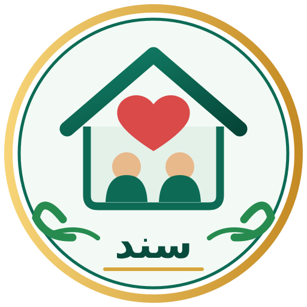

طلب مساعدة
قدّم طلبًا أوليًا ليتم التواصل معك بعد فتح استقبال الطلبات رسميًا.
نموذج طلب المساعدة
سندخدمات المجتمعساهم معناقدّم طلبًا أوليًا ليتم التواصل معك بعد فتح استقبال الطلبات رسميًا.
نموذج طلب المساعدةتعرّف على برنامج الكفالة وآلية التحقق والمتابعة مع حماية خصوصية الأطفال.
عن برنامج الكفالةساهم بوقتك وخبرتك في تنظيم المبادرات والوصول للمستفيدين.
سجل اهتمامكهذا النموذج للعرض التجريبي فقط ولا يرسل بياناتك أو يحفظها لدى سند حاليًا. لا تكتب معلومات حساسة قبل تفعيل نظام آمن.
يُدار برنامج الكفالة عبر ملفات داخلية مرمّزة، والتحقق من الحالات، ومتابعة دورية. لا ننشر أسماء الأطفال أو صورهم أو مواقعهم.
عبر باحثين مخولين.
مراجعة الوثائق بسرية.
وفق الاحتياج والأولوية.
تقارير آمنة دون كشف الهوية.
تُحدّث هذه القائمة حسب قدرة الفرق والشركاء. لا نعرض مواقع العائلات أو نقاط توزيع حساسة.
تغطية حسب توفر الفرق والاحتياجات.
تغطية حسب التنسيق والتحقق.
تغطية بالتعاون مع الجهات المحلية.
لن تظهر أرقام مالية أو نسب إنجاز إلا بعد اعتمادها ومراجعتها.
الحالة: قيد التجهيز
سيتم تحديث التقدم بعد التوثيقالحالة: قيد التنظيم
سيتم تحديث التقدم بعد التوثيقالحالة: قيد التجهيز
سيتم تحديث التقدم بعد التوثيقنعمل على تنظيم ملفات الحملات وآليات التحقق والتوزيع.
نلتزم بعدم نشر معلومات تعريفية عن الأطفال والعائلات.
نسعى للتنسيق مع الجهات المختصة والشركاء المحليين.
نربط أهل الخير بالمبادرات الإنسانية لدعم الأيتام والعائلات المحتاجة، ونعمل على إيصال المساعدة بكرامة وشفافية بالتعاون مع الجهات المختصة.
تعرّف على المبادراتتنويه: المنصة في مرحلة تجريبية، ولا تستقبل حاليًا أي مدفوعات أو تبرعات إلكترونية.
مبادرات واضحة، لكل منها هدف وخطة تنفيذ وتقرير متابعة.
مساندة الأطفال الأيتام في احتياجاتهم الأساسية والتعليمية، مع حماية خصوصيتهم وكرامتهم.
توفير الاحتياجات الغذائية الأساسية للأسر التي تمر بظروف معيشية صعبة.
المساهمة في توفير مياه الشرب النظيفة للمناطق والعائلات المحتاجة.
توفير الملابس والأغطية ومستلزمات الحماية من البرد حسب الأولويات.
مساندة المتضررين في الاحتياجات العاجلة بالتنسيق مع الجهات المختصة.
توفير المستلزمات التعليمية والفرص التي تساعد الأطفال على مواصلة التعلم.
مراجعة الحالات بالتعاون مع جهات مختصة.
تحديد الهدف والميزانية وخطة التنفيذ.
تنفيذ المساعدة وتوثيق المصروفات.
تحديثات الإنجاز مع حماية بيانات المستفيدين.
نسعى إلى أن يكون لكل مبادرة هدف واضح وسجل للمساهمات والمصروفات وتحديثات التنفيذ. لن نعرض بيانات شخصية أو صورًا تكشف هوية الأطفال والعائلات.
إذا كنت ترغب بالتطوع أو التعاون المؤسسي، جهّز رسالة اهتمام من خلال الزر.
تُنسخ الرسالة إلى جهازك فقط ولا تُرسل تلقائيًا.